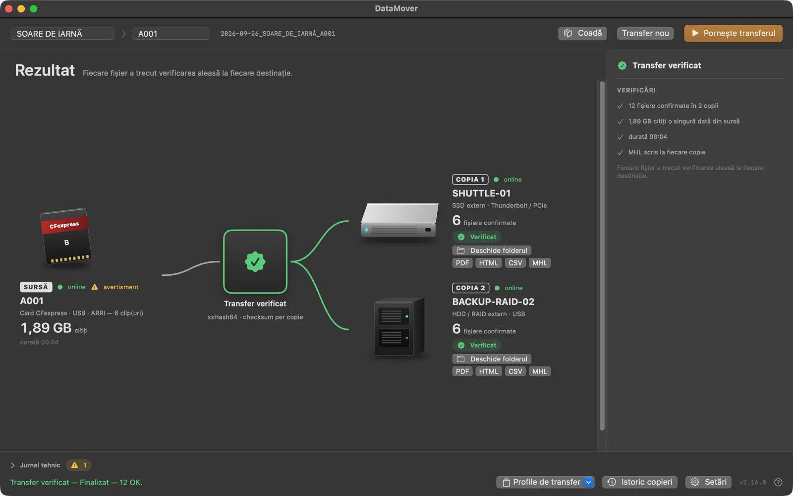
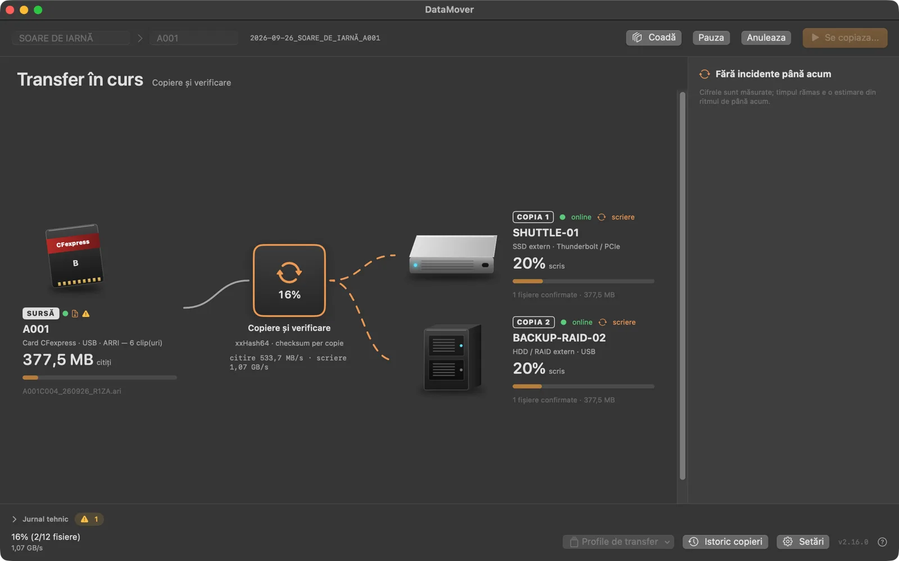
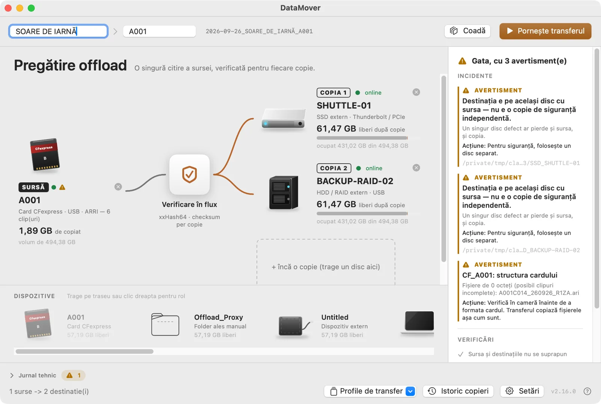
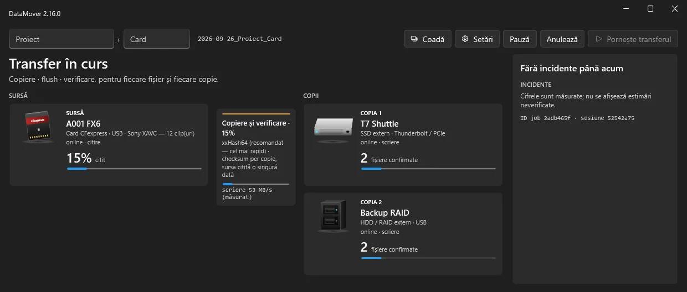
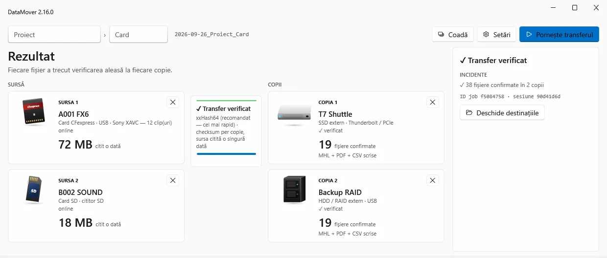
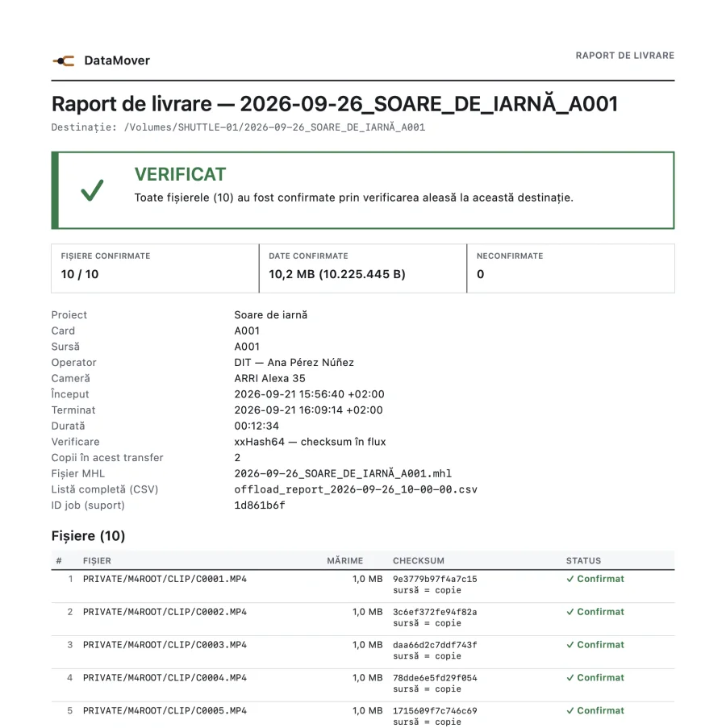

Offload pentru producție video · macOS · Windows
Cardul citit o dată.
Fiecare copie, verificată.
DataMover copiază materialul de pe card simultan pe mai multe discuri independente. Fiecare fișier primește numele final doar după ce checksum-ul copiei se potrivește cu sursa, iar la final primești rapoarte pentru fiecare destinație.
Fluxul real
Trei pași, fără pași ascunși
01
Pregătire
Alegi cardul sau folderul sursă și discurile de destinație. Înainte de pornire, aplicația blochează destinațiile aflate în sursă, aceeași destinație aleasă de două ori și coliziunile de nume. Te avertizează și când o copie ar sta pe același disc cu sursa.
02
Transfer
Sursa se citește o singură dată și se scrie în paralel pe toate copiile. Fiecare fișier stă sub un nume temporar până după flush și verificarea checksum-ului. Un disc deconectat e raportat doar la destinația lui; celelalte continuă.
03
Rezultat verificat
Verdictul e unul singur, fără ambiguitate: verificat, verificat cu avertismente, eșec parțial, eșec sau anulat. Pentru fiecare destinație primești rapoarte PDF, HTML, CSV și un fișier MHL.
Două aplicații native
Același contract de copiere, interfață proprie fiecărui sistem
Varianta pentru macOS e scrisă în SwiftUI, iar cea pentru Windows în WPF. Arată diferit, dar respectă aceleași reguli de integritate și produc aceleași tipuri de rapoarte. Capturile provin din aplicații reale, rulate cu date de test.
macOS
Apple Silicon · macOS 14 sau mai nou



Windows
Windows 11 · x64 (pe ARM64 rulează prin emulare x64)


Ce poți verifica singur
Dovezi, nu promisiuni
Fiecare garanție de mai jos lasă o urmă pe disc, pe care o poți deschide și compara.
01Checksum pentru fiecare copie
Sursa e citită o dată, iar fiecare copie e comparată cu ea (xxHash64 implicit). Un fișier modificat pe card în timpul copierii apare ca neconfirmat.
02Fișiere temporare .dmpart
Copia se scrie sub un nume temporar și primește numele final doar după flush și checksum. Un fișier întrerupt nu poate fi confundat cu unul verificat, iar un fișier existent la destinație rămâne neatins dacă noua copie nu se confirmă.
03Confirmare finală explicită
Rezultatul se dă separat pentru fiecare destinație. Ejectarea automată a cardului se face doar când toate copiile sunt confirmate.
04Reluare cu checkpoint
La reluare, sursa și copia se recitesc și trebuie să dea checksum-ul salvat la confirmare. Numele, mărimea sau data nu sunt suficiente pentru a sări un fișier.
05Rapoarte PDF, HTML, CSV și MHL
Pentru fiecare destinație: listă de fișiere, mărimi, checksum sursă și destinație, status. MHL pentru lanțul de custodie din post-producție.
06Pachet de diagnostic redactat
Aplicația ține un jurnal local rotativ și exportă la cerere o arhivă ZIP. Căile și numele sunt înlocuite cu identificatoare. Nimic nu se trimite automat.

Instalare și cerințe
Instalare pe fiecare platformă
macOS
DMG cu pachet de instalare
- Deschide fișierul DataMover.dmg descărcat.
- Dublu-clic pe pachetul .pkg din fereastra deschisă. Installerul pune aplicația direct în folderul Aplicații.
- Confirmă cu parola de administrator a Mac-ului, când ți se cere.
- Pornește DataMover din Aplicații. Actualizările apar în aplicație.
- Sistem
- macOS 14 sau mai nou, Apple Silicon
- Semnătură
- Developer ID (Team 8AR6XP8MG7), notarizat de Apple, acceptat de Gatekeeper
Pachetul e notarizat de Apple, deci Gatekeeper îl deschide fără pași suplimentari.
Windows
ZIP cu DataMoverSetup.exe
- Extrage arhiva DataMover-WPF-Windows.zip.
- Rulează DataMoverSetup.exe și acceptă acordul de licență.
- Aplicația se instalează în Program Files, cu scurtătură în meniul Start. Scurtătura pe Desktop e opțională.
- Dezinstalarea se face din Setări → Aplicații. Șterge și setările, licența locală și jurnalele DataMover.
- Sistem
- Windows 11, 64 de biți (x64; pe ARM64 prin emulare)
- Semnătură
- Certificat self-signed, nu certificat comercial Authenticode
Windows SmartScreen poate afișa „Windows a protejat PC-ul” sau „Editor necunoscut”. Motivul: installerul nu e semnat încă cu un certificat comercial. Dacă ai descărcat fișierul de pe această pagină, apasă Mai multe informații → Rulați oricum.
Probă și activare
Cod sursă pe GitHub, sub licență MIT
- 7 zile complet funcțional, fără cont și fără card.
- După perioada de probă, versiunea neactivată copiază cel mult 2 GB per transfer.
- Activarea e legată de ID-ul calculatorului și se obține printr-o donație pentru dezvoltare. Suma curentă apare în aplicație. Scrie-ne pe WhatsApp.
Încredere și limite
Ce este testat și ce nu, încă
DataMover reduce riscul la copiere, dar nu îl elimină. Păstrează cardul neformatat până verifici copiile.
Verificat cu teste automate
- Copiere pe două destinații cu checksum identic, pe macOS (APFS, exFAT) și Windows (NTFS)
- Reluare după întrerupere, cu recitire și comparare de checksum
- Disc plin și spațiu insuficient pe macOS; destinație dispărută în timpul copierii
- Coliziuni de nume, symlink/junction, nume Unicode și căi lungi
- Instalare, actualizare, reparare și dezinstalare pe Windows; installer notarizat pe macOS
Neverificat încă
- Pană de curent sau oprire bruscă reală în timpul copierii
- Card sau disc scos fizic în timpul transferului
- Destinații de rețea (SMB) și exFAT pe Windows
- Disc plin real pe Windows
- Navigare doar din tastatură și cititor de ecran pe Windows
Documentație
Ghid de utilizare
Ghidul PDF explică instalarea, activarea și fluxul de lucru, pas cu pas. E inclus și în aplicație.
Descarcă DataMover
Încearcă-l pe un card de test înainte de o filmare reală. Arhivele cu versiunile anterioare rămân disponibile pe GitHub.